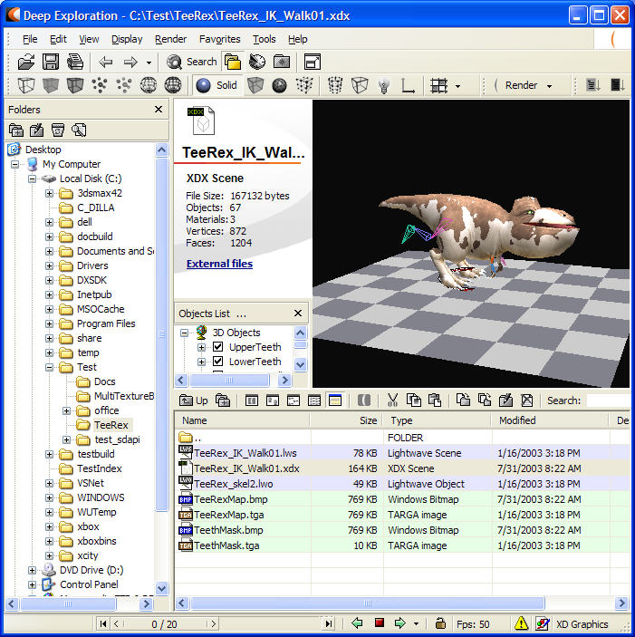

Deep Exploration allows artists to browse art assets in MAX, Maya, XSI, Lightwave and XDX (Xbox DirectX File Format), as well as a large number of other 2D and 3D art formats. Using this tool, artists can edit the materials and convert back and forth between the supported formats. Artists can use the tool to quickly view their art on the Xbox without developer intervention.

Illustration Deep Exploration GUI.
Two of the most critical parts of Deep Exploration are the Preview on Xbox and Optimized Preview on Xbox buttons, typically located in the upper right-hand corner of the Deep Exploration GUI. Until you mouse over the buttons, they will be grey and dark grey, respectively.
Illustration The Preview on Xbox button.
Illustration The Optimized Preview on Xbox button.
Pushing either button generates a human-readable Xbox DirectX (XDX) file. This in turn is compiled into an Xbox Binary file named xbrc_out.xbr. This file is written out to the xe:\xbview\media\ directory on the default Xbox. Deep Exploration then launches XbView, allowing you to see the assets on the Xbox.
The green button exports the 3D or 2D scene to the Xbox as fast as possible. The red button exports the current 3D or 2D scene and then optimizes the triangle geometry into triangle strips. This can improve performance by up to 30 percent when previewing the object. Unfortunately, it takes time to create the triangle strips, and this time can vary from nearly the same amount of time as the traditional green-button preview to ten or more minutes! The good news is that once you've previewed the scene with a given button (and haven't changed the scene in Deep Exploration), the previews are instantly available for the object with whatever button you already used. This allows you to switch back and forth and observe the performance improvements, if any. If you're just in a hurry to see what your object looks like, use the green button. If you want an optimized model for performance analysis reasons, use the red button.
Note Deep Exploration overwrites xe:\xbview\media\xbrc_out.xbr every time you view an asset on the Xbox. The file is overwritten even if it is marked read-only.
For full documentation on the use of the Deep Exploration GUI, see the Deep Exploration Help or press F1 from within Deep Exploration.
Although Deep Exploration is a robust tool, there are several known issues: